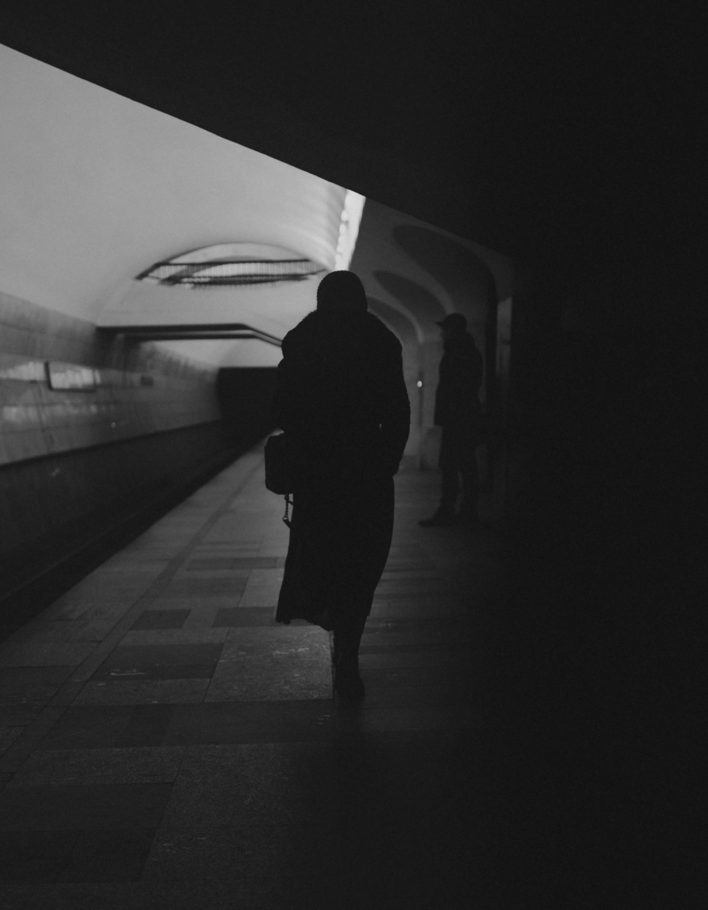

Blinded by the Blood
 Photo by MonikaP on UnsplashToday it rained, washing away your sins, Cleansing the blood from my wounded skin. Each drop falls harder than before, The wound deepens more and more.
A question haunts my mind, Can they see through me? Their gaze passes, unfazed, A cycle that spun in countless threads.
The devil wears an angel's guise, They shake its hands, oblivious to lies. Know the truth, but choose to hide, As if it is a god, they must abide.
I have seen it all, heard it all, The truth that no one would want to know. If I dare to fell, they will twist my words, Paint me as a liar in their make-believe world.
When all of them look away, You smile like how a traitor would. My world turns forever blurred, With only your heart and smile clear.